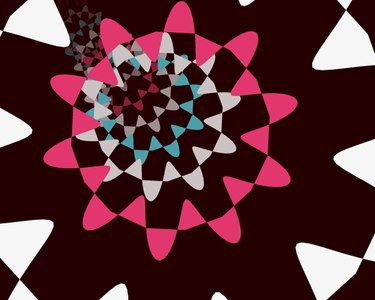

History of Web Browser Demos
Link to presentation:
http://tpolm.org/~ps/history_web_browser_demos
Shortened:
http://tinyurl.com/webdemos
DATETIME
80s------\o/-90s----------2k----------2k10-----
AGE GROUP
14-18 years old
DEMOSCENE ETHOS
Just doings things with the computer
WEB BROWSER DEMOS
No internet!!
DATETIME
80s----------90s-\o/------2k----------2k10-----
AGE GROUP
14-18 years old
DEMOSCENE ETHOS
Pushing limits of hardware
WEB BROWSER DEMOS
BBS'es! Does that count?
DATETIME
80s----------90s------\o/-2k----------2k10-----
AGE GROUP
16-22 years old
DEMOSCENE ETHOS
Code vs Design
WEB BROWSER DEMOS
Massification of internet, Java Applets hype
DATETIME
80s----------90s----------2k-\o/------2k10-----
AGE GROUP
16-25 years old
DEMOSCENE ETHOS
Hardware Acceleration vs not
WEB BROWSER DEMOS
Netscape vs Internet Explorer, Rise of Flash
DATETIME
80s----------90s----------2k------\o/-2k10-----
AGE GROUP
18-30 years old
DEMOSCENE ETHOS
Your Platform vs Modern PC
WEB BROWSER DEMOS
Firefox 2005, Chrome 2009
DATETIME
80s----------90s----------2k----------2k10-\o/
AGE GROUP
18-35 years old
DEMOSCENE ETHOS
Realtime vs YouTube
WEB BROWSER DEMOS
Mobile WebApps, Death of Flash, Rise of WebGL
Chart time!
Java Applets could run graphics!
terribly slow
no 3d
horrible sound support
security exploits
1997
Assembly 97
The Party 97
Java democompo
1 Javademo Ankka Five Coders 2 Super Ghetto Broz 3 Three levels of Insight dk-scene 4 Javamiga dCS
Java democompo
1 Stakater Prone 2 Mute Complex 3 Minus 61 In Detroit Ram Jam 4 Hype The Digital Nerds 5 Ego Tripping Sonik Clique 6 Mer' Strøm The Leather Pants 7 Method Man 8 The Grind Pee Wee 9 X Hublus Matofakus Hirmus 10 Micro Flemming Jans 11 Rising Star Epsilon 3 12 Blocüt Blocüt
1998
The Gathering 98
Takeover 98
Assembly 98
The Party 98
Java democompo
1. Forward Komplex 2. Next Digital Nerds 3. Helt Sten Nocturnal 4. Pomp the h-town everyday H-town Playaz
Java democompo
1. Flow Digital Nerds 2. Coal Otak Inc. 3. Antiblur Antiblur
Java democompo
1. GODOG Complex 2. Loop.2 Digital Nerds 3. Lava Yodel 4. golden kypersumppi tAAt 1998 5. IT CAN'T BIDONE Ram Jam 6. Space Odyssey NySTuL 7. Return of the Mack H-Town/Silents 8. Lee Sail
Java democompo
1. Apex digital nerds 2. Letmaelk IV E605 & Phosphor
Java intro compo
1. supermegaplus Prone
1999
The Gathering 99
Takeover 99
Assembly 99
Java democompo
1. Lucid Dream Digital Nerds 2. Cayenne Prone 3. tyyny Esa Type & Sir Ed. B.
Java democompo
1. Stress! Infuse Project 2. Legend OtakInc
Java democompo
1. I Yodel 2. cyboman 2 komplex 3. Lain OtakInc 4. Top Billing, Jar Jar Binks Killing H-town 5. PikaNutru tAAt
2000
The Gathering 2000 Java democompo
Java democompo
1. No You Dont Prone, Blasphemy and Tpolm 2. adam7 Prone & Excess 3. CPU shortage in The Neutral Zone The Hullkort Masters 4. Hagle Anakata
After 2000
no more Java democompos
web friendly demoparties switched
to Flash or browser
LTP 4 Invitation / Equinox
mixed bag / Komplex
Assembly 2000
tulnukas / Komplex
Proxy 2000
Code Police / Mankind
Synthesis 2001
avaruusseikkailu / aikarele & fuzzion
Euskal 2001
Browser plugin from Macromedia
became known as an advanced web authoring tool
slow
buggy sound
no 3D
Different Web One / Melon Dezign
1998
Flash demo compo
1. Party People Alpha Design 2. vesileimat alkkareissa tAAt 3. pro jackal 4. No Way Tunneli.com 5. Operation Kala-Kalle -First Adventure Aropupu 6. pingpong kure+aava 7. The Nerd ChosenOne 8. Jumalanako mahtavaa? p.orkkana 9. purkamo.com featuring paleface purkamo.com 10. Astraalikakka SE8.ORG
Flash demo compo
1. Possibilities with Flash Active Interactive 2. Flash Compo ? UT clan LEGO 3. Widescreen RBI
Flash demo compo
1 Plasticwrap Haujobb 2 They Gave Me Lsd RNO 3 Pronestar Prone 4 Svesk The Party 2000 Goods 5 BTTR A-D
Flash demo compo
1. ViBE ByteBusters 2. Saxy TBC
Browser demo compo
1. Omega Interactive by Error323/ReDoX / Omega Interactive 2. Phat Frenzy by Screes and Bassie / Active Interactive 3. Troublemakers by Berzerker / Okkie / Tentacle 4. D Project by Evil Knieval / Tentacle 5. die Blumenkinder by Black Maiden 6. Voyager by Daniel Barton a.k.a. goeb / RotA 7. "Look-mommy-I-made-this-in-less-than-five-minutes" by Gasbag / D-Coy 8. gentics demo by Pazazzo / --- 9. flash by aancsiid / dog
Flash demo compo
1 Häiriö RNO 2 Ufo vs Jurppi Yazu / Kellari 3 pixel:engine Esko Ahonen 4 katse kone 5 Shiver Outkazt 6 SUB7 subterfuge 7 Lonestar RedHillDrunks 8 years some 9 pipedope jac 10 Outsider Rable 11 The Flex quadri Lame Illusions Corp. 12 Trafintu Diza
Flash demo compo
1 45ound TBC 2 The TMD Game USSR-Network
ASUS Flash demo
1 Whitebalance 2 Well gues 3 hemkunskap
Flash demo compo
1 Alice in Wonderland RNO 2 Delirium 3 Ontogeny mfx & Spinning Kids & Fairlight 4 Night Life
Flash demo compo
1. Super mushroom sisters by RNO 2. Kreivi Krapula by Rapture Seekers 3. Evolve by Esko Ahonen & Milan Kolarovic 4. Terrori by K-Statik/Outkazt 5. linear motion by hannu_ 6. Recycled by Bombsquad 7. Multiplex by Redhill Drunks 8. Nendo by wain and codec 9. Grunge212 by Kone creations 10. Warbirds by Inapt 11. Paradigm by Kellari
After 2002
almost no Flash democompos
all web friendly demoparties switched to
browser demo compos
Dynamic HTML
Javascript without HTML5 canvas!
no graphics API at all
sound support using plugins
Hau Strange / Haujobb
Mekka Symposium 2000
256b.htm compos (2002)
Array / DraftingZup
The Gathering 2002
Browser demo
1 Mooncheese by Shingebis [Javascript & DHTML] 2 the Summer is HERE! by kellari & inapt [Flash] 3 Kontrast by Pyrotech [Flash] 4 Governmentro by MukaSmarts [Shockwave 3D & Flash] 5 Party Island by Poro & Exca [Flash] 6 Kuutioprojekti by Plinc [Flash]
Mooncheese / Shingebis
Assembly 2004
Browser demo
1 Redbug by Shingebis 2 the drop by komplex 3 pure javascript demo by IKU 4 Neja by ribbon + bomb 5 Scene of Life by Inapt & Static 6 I,Mofo by Pyrotech 7 Etsin unelmaa by CND GROUP
Redbug / Shingebis
Assembly 2005
pure javascript demo / iku
Assembly 2005
Neja / Ribbon + Bomb!
Assembly 2005
In 2005 the canvas element was added to browsers
DHTML as a demo platform died
Server side web demos
http://phpdemo.pseudohacker.org/
worlds first: '3d-engine' in php / Rasmus
2002
Timecube / Jumalauta
2006
Spinning Jenny / Kryo
2007
Browser plugin
programming language for realtime graphics
"Better than Flash"
Borg / Rez
Mekka & Symposium 2002
Thank You / Razor 1911
Alambik Contest 2002
SSG / Goyave
2002
Evil Intro / Surprise! Productions
2002
MegaFlip / woodtower
Synthesis 2004
Around 2004 Alambik development was discontinued
Browser demo
1. super fantastic gaydisco all night long [Flash] by DAMONES & RNO 2. sUPERPOWERgirl [Flash] by Kone Creations 3. Linear Motion 2 [Flash] by kellari 4. w0rd! [Flash] by natural born chillaZ 5. Fragile [Flash] by Pyrotech 6. bOOm [Flash] by Exca & Poro 7. Jazz duck factory [Director] by Citec 8. Flash Reality [Flash] by The Scampers 9. NecroLurk [Flash] by wdom & K-statik 10. Web Distortion [Flash] by Northern Dragons 11. Diip [Flash] by Inapt
dylandrazen is my superhero / threepixels
2003
Christmas (in a wild style) / PowerPuff Girls
2003
The Hypnotizer / Paradox
2004
Browser demo
1 Mooncheese by Shingebis [Javascript & DHTML] 2 the Summer is HERE! by kellari & inapt [Flash] 3 Kontrast by Pyrotech [Flash] 4 Governmentro by MukaSmarts [Shockwave 3D & Flash] 5 Party Island by Poro & Exca [Flash] 6 Kuutioprojekti by Plinc [Flash]
$21 / Orion
Buenzli 2004
Browser demo
1 Redbug by Shingebis 2 the drop by komplex 3 pure javascript demo by IKU 4 Neja by ribbon + bomb 5 Scene of Life by Inapt & Static 6 I,Mofo by Pyrotech 7 Etsin unelmaa by CND GROUP
Electro Music Transform / Videogame Orchestra
2005
holy guadalupe! / xplsv
2006
Browser demo
1 Who Killed Travolta? by Evo Flash / Bombsquad 2 Tokyo-Bangkok-Tokyo by Pyrotech 3 Even More Explosions in the Sky by jac 4 Gallions Reach by Gasman 5 Seed Vessel by Lootikko 6 SqUaReThRuSteR by MiiKA & tEEMU BRoDUCTiONz 7 demo by Dreadful Sight
Flash compo
1. Flint - Evoflash 2. Beat - OOS 3. Alchemist 23k - Lume Crew 4. Carnal - Minority 5. LCD - Unic0rn
Flash compo
01 New Order - Makaltri 02 FDA010 - Dahan|BOS^FDA 03 bluepink - krol girxavier
Browser demo
1 ADHDTV by Evoflash & BombSquad 2 Continuum by Minority 3 Pangea Ultima by Pyrotech 4 Lost In Lava Lamp by Lume Crew 5 pixtures by komplex & slengpung 6 Oral Tentacle by wdc
Flash compo
1 manus by Minority 2 assembly invitation by Evoflash 3 adore chill by Jac 4 water colors by Wide Load 5 bluewaltz by Pandafox 6 hot single by Inapt 7 maplane by MAW
99er / Evoflash & Bombsquad
Assembly 2008
Severity Of Grey / Evoflash
Assembly 2009
Proof of Concept / Evoflash
(64k) Assembly 2009
Spyral Out / Evoflash
Assembly 2010
Area Unstable / Badsquare
TRSAC 2010
Cubes Of Babylon / Evoflash
Assembly 2011
Penumbra / TRBL
Tokyo Demofest 2013
Brain Muffin / Pasmas
Flashback 2013
Browsers started supporting canvas in 2005
WebGL only in 2011
3D Tomb II / ribbon
2007
Antisocial / Gasman & ZX Spectrum Orchestra
Sundown 2008
Or So They Say... / xplsv
Euskal 2010
2011
JS1K 2011
Revision 2011
Mozilla Demoparty 2011
@party 2011
DemoJS 2011
Solskogen 2011
#1: FlexiDR↻ID by @keenblaze #2: Particle carriage by @p01 #3: Battle in the sky by Alexander Vedernikov ...
No Comply / #audio
2011
RO.ME / Google Chrome Experiments
2011
Cosmonautics Day 50 / Bemz & 7dUMP & Quite
2011
Web Browser democompo
1. Cube - DESiRE 2. nop - Stroboholics & Metalvotze 3. organ - trbl 4. SAFETY IN THE KITCHEN - CAREBEAR
704 / Paulo Falcão
2011
MKULTRA / Bilotrip
Stream 2011
Web Browser democompo
1. Slamdown by Traction & Hedelmae 2. Blind Serpent by fxm
Web Browser democompo
1. E - coda 2. Spheres Unite - Epoxy 3. Summertime - Desire
Freestyle
#1 Flares - tmp #2 Canvas Trip - Adinpsz #3 Irrelevant - #ponce / GFM #4 Particles.js - basecode #5 Clock Flower - Audrey #6 Color The Wind - Tarmil / Ctrl-Alt-Test #7 DemoJS - Romain / !!M #8 Datagalaxy - Bordercloud #9 A New Hope - yGG4x
1k
#1 Glenz1k - Log #2 Creation - Silexars #3 gl1k Cotton Candy - p01 / ribbon #4 The Ring - Bert Peters #5 Orange Joy - Trigrou & Bock #6 1kk - Hexapode #7 Memory - Hello / Sector1 #8 Pixel Firework - Pilvee #9 The 1d1k game - Tim Holman #10 JSPaint - Flex #11 Demo001 - Cheminel
1k
1. Something something - Tick
2. Democalypse Now - Flare
3. JavaScritp Demo On - Pants On - Stiff Nipples
I Want Moar - Primitive
5. Knowing me by gaze - visy^bilotrip
Azathioprine / Alcatraz
Evoke 2011
The Self-Explanatory Demo by e64 & cTrix
Mozilla Demoparty 2011
Cruisin by Abyss
tUM 2011
2012
JS1K 2012
Revision 2012
@party 2012
DemoJS 2012
Solskogen 2012
#1: Autumn Evening By Philip Buchanan #2: A Rose is a Rose By Roman Cortes #3: Speech Synthesizer By Mathieu 'p01' Henri ...
Web Browser democompo
01. Radiotherapy by alcatraz & scoopex 02. Another Spring by ClySuva 03. 20 km by Atari $T - JaKott - AmigaSuxx 04. Twister by Abgestuerzte Akademiker
Web Browser introcompo
01. "Laser" by luni/Bitpopler 02. Fabrik by Adinpsz 03. Fun with [0,1]^2 by g-hennux 04. THE A-WORD by losso ^ code red
Fabrik / adinpsz
Revision 2012
Demo
#1 Burnt - Game From Mars #2 muf - trambz #3 BIGintro - The Matadors #4 peer pressure - bilotrip #5 mute - yGG4x
10k Intro
#1 mwwnwormer - Rift #2 reborn - tmp in cooperation with adinpsz #3 parsley state - tpolm
1k
#1 MATRAKA - p01 / ribbon + 4mat / ate bit #2 Smoke VS Structure - Rift #3 spelunking - orbitaldecay #4 Bended - Log #5 Morning Job - hexapode #6 Nufl0wer - Straylight #7 adinpsz - 512 bytes #8 raster 1k - Popsy Team #9 Way of Css - bobylito #10 TunnelMaze - Tarmil/Ctrl-Alt-Test #11 liquid pixel - Noctis #12 La 3D en folie - Sector One #13 SkrE7ch - Kane #14 Catarakt - Kane #xx matrix - Martin
Web Demo
1. HONEYCOMB - Ninjadev 2. How Glow Can You Go? - Stiff Nipples 3. Unusual Mind - Randy/Relapse 4. Weboholics - Indigo 5. LMS - Daeken 6. Island green loreen - The Gang
70s / Alcatraz
Evoke 2012
JPB / 3LN & Chimera Music
Evoke 2012
State Zero-One / Dilemma
Function 2012
Twogather / 3LN
MAIN 2012 / Outline 2012
Microscopix / LiteWerx.
TRSAC 2012
2013
JS1K 2013
Revision 2013
DemoJS 2013
...
#1: Strange crystals II By Philippe Deschaseaux #2: Furbee, get out of that tunnel ASAP! By Roman Cortes #3: 3013 The 䕵 space-time fracture By Mathieu 'p01' Henri ...
Web Browser Demo
01 doppelhirn by losso/code red 02 Js Pride by TiteiKo + wsmind + Modraw 03 Scenefinity by Mithaldu/SVatG 04 Inedible Candy by TPOLM 05 Soundless by AMcBain / from://kennewick
Demo
1. #04 51 pts Kiwi - Kiwi
2. #02 48 pts lol.js - Sam
3. #03 40 pts Stars in your brain - greweb
4. #01 11 pts to_the_beat // js - 5013 / xplsv
8k Intro
1. #06 60 pts GrandPa - Adinpsz
2. #07 40 pts CRTeCK - TiteiKo - wsmind - Did'
3. #05 29 pts Oli - taG
4. #04 16 pts Pointless - TheT(ourist)
5. #02 8 pts Fake Plastic Cubes: Part 2 - Gasman
6. #03 7 pts Bitslife - Wiz / Trolls In The Shadows
7. #01 5 pts No Javascript - X-Men
1k Intro
1. #07 74 pts MINAMI DISTRICT - p01 / ribbon
2. #04 44 pts Rainbowave - jmpp
3. #06 14 pts alienwatch - g012
4. #05 11 pts biloblaster - bilotrip
5. #01 9 pts A1ku - Guillaume S
6. #03 8 pts ROTOZOOM - nanard
7. #02 7 pts Balls! - TheT(ourist)
Artsy (and slightly insane) / bcat
2013

à la Melon / Solo
2013
Shadertoy
1. polyanka - w23 2. I Want To Revert - Daeken of Primitive 3. Stunnel - Tick of Excess
Where no one can hear you scene / Outracks
Solskogen 2013
Obsidian / xplsv
Euskal 2013
Good fight!
Good night!
http://tinyurl.com/webdemos